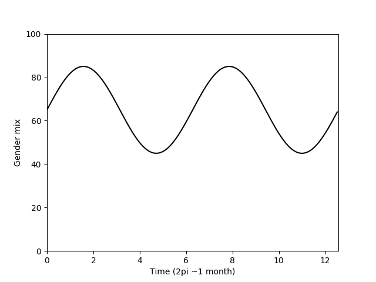

There are four main parts to me:
A bunch of these things will, of course, spill over onto other pages, but an introduction is below.
I'm a gamer, both video and tabletop.
I am a massive nerd, both in computing and general nerd culture.
I identify as genderfluid and non-binary. This means that how much of me is male and how much is female varies over time, and I never identify fully as either male or female.
In the above graph, the line represents how male I am. 100% is fully male, and 0% is fully female.
I am both furry and therian. My primary fursona is a male wolf pup called Scree, and my secondary is a female kitten known as Sam. These two broadly align to my gender (see above).
Content Ⓒ Sanchit Sharma 2017, code licensed under Apache-2.0